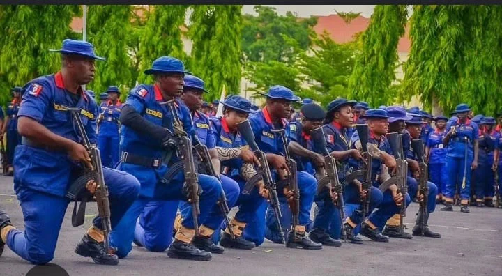

Security & Crime · 20 Sep 2026
Federal Government Suspends NSCDC Officers, Arrests More Personnel Over Niger Miners' Deaths

The Federal Government and the NSCDC have taken major disciplinary and legal actions, suspending and arresting numerous officers following the deaths of 37 suspected illegal miners in custody in Niger State.
The Federal Government and the Nigeria Security and Civil Defence Corps (NSCDC) have escalated disciplinary and legal actions, raising the number of detained personnel to 24 following the deaths of 37 suspected illegal miners in custody in Niger State The Punch. The tragic incident occurred on Thursday, September 17, 2026, prompting far-reaching administrative interventions and a high-level independent probe The Punch, The Reporter Media.
Government Response and Investigation Panel
Following a directive from President Bola Tinubu for a comprehensive, transparent, and unhindered investigation into the deaths, Minister of Interior Olubunmi Tunji-Ojo announced the immediate suspension of all officers allegedly involved The Punch, The Reporter Media. Alongside these suspensions, the Federal Government constituted a 10-member independent investigative committee The Punch, The Reporter Media.
The panel is chaired by retired Department of State Services Deputy Director General Jonathan Kure, with former Nigerian Law School Director General Prof. Isa Hayatu Chiroma serving as secretary The Reporter Media. Other members include retired AIG Hosea Hassan Karma, Prof. Olayinka Buhari, representatives from the Minna Emirate Council and the Niger State Government, Miners Association of Nigeria National Secretary Liman Sulaiman, human rights lawyer Deji Adeyanju, journalist Zainab Suleiman Okino, and public affairs analyst George Agbakahi The Reporter Media.
The committee is tasked with establishing the identities of the deceased, investigating the circumstances of their arrest, detention, and subsequent deaths, determining institutional or individual responsibility, complicity, negligence, and misconduct, and recommending appropriate actions including compensation and preventive measures The Reporter Media. The panel has been given a two-week window to submit its final report The Reporter Media.
NSCDC Actions and Detained Personnel
NSCDC Spokesman Assistant Commandant Babawale Afolabi confirmed that three additional personnel were arrested and suspended, bringing the total number of officers in custody to 24 The Punch. The affected officers—spanning station guard, arrest, investigation, intelligence, legal, and guard duties—were transferred alongside the Niger State Command personnel to the NSCDC National Headquarters in Abuja The Punch, The Reporter Media.
High-ranking officials among those held include Niger State Commandant Suberu Siyaka Aniviye, Head of Intelligence and Investigation Ajayi Philips, Head of Operations John Agrahau Chagwa, Obafemi Elvis, and Legal Officer-in-Charge Stephen Tsado The Punch. These personnel are undergoing rigorous interrogation and administrative disciplinary measures to ensure readiness for questioning by the Presidential Independent Investigation Committee and other panels The Punch.
Mourning and Institutional Stance
As a mark of mourning and respect, NSCDC Commandant General Ahmed Audi directed that the Corps' flag fly at half-mast across all formations nationwide for three days starting Sunday The Punch. Emphasizing institutional integrity, Audi stated that any personnel found culpable will face the full weight of the law and internal disciplinary procedures, reiterating that the agency maintains a zero-tolerance policy for unprofessional conduct, high-handedness, and violations of citizen rights The Punch.
Interior Minister Tunji-Ojo similarly warned that obstruction, witness intimidation, or the concealment and destruction of evidence would be treated as grave offenses, instructing all relevant units to preserve material evidence and fully cooperate with the ongoing inquiries The Reporter Media.
Sources
This article was produced by the C. O. Eric AI Newsroom from the cited sources. It is published only after automated evidence and safety checks.